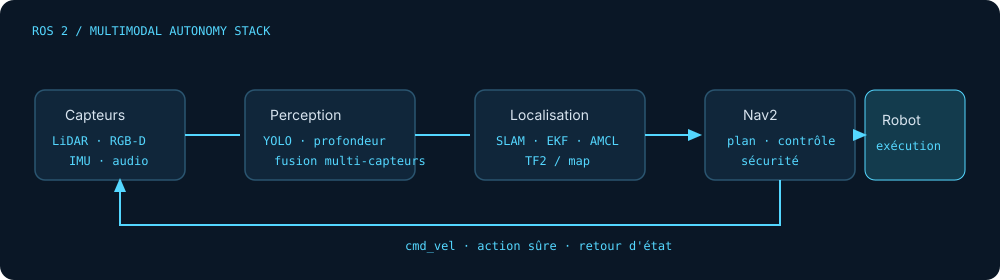

Robotique autonome · ROS 2 · IA multimodale
Lacina
Sidibe.
Étudiant ingénieur Robotique & IA — autonomie mobile multimodale.
Je conçois et valide des architectures ROS 2 de perception, localisation et navigation pour robots mobiles autonomes, en simulation et sur robot réel.
Fès, Maroc · Disponible pour un PFE 2027
autonomy_stack.launch.py
ros2 launch autonomy_stack robot.launch.py # sensors /camera/rgb → perception /scan + /imu → localization /cmd_vel → safe control [OK] map loaded 0 collisions [OK] Nav2 lifecycle active
Simulation → robot réel
01 / Projet phare
Un robot qui
comprend et agit.
Une architecture de recherche pour comprendre une instruction humaine, ancrer le langage dans la scène, naviguer avec sûreté et exécuter une action vérifiable.
▶
Vidéo de démonstration · 60 s
Insérer l'iframe YouTube indiquée dansREADME.md[X] %Réussite
[Y] msLatence bout en bout
0Collision
ROS 2Architecture typée

Un système démontrable, mesuré et orienté sécurité : je transforme une idée multimodale en boucle perception → décision → action testable.
02 / Stage de recherche
Optimiser
sans deviner.
PSO + contrôleur flou Mamdani pour la poursuite de personne, avec simulation réaliste, six scénarios et validation indépendante.
Coût de poursuite17,92 → 1,49 −91,7 %
Perte de cible26–90 % → 0 %
CollisionsÉliminées 6 / 6 scénarios
Validation+95,4 % sans surapprentissage
03 / Laboratoire de projets
Construire. Mesurer.
Itérer.
04 / Certifications